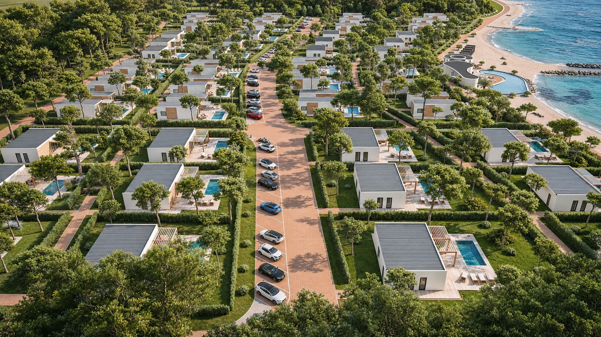
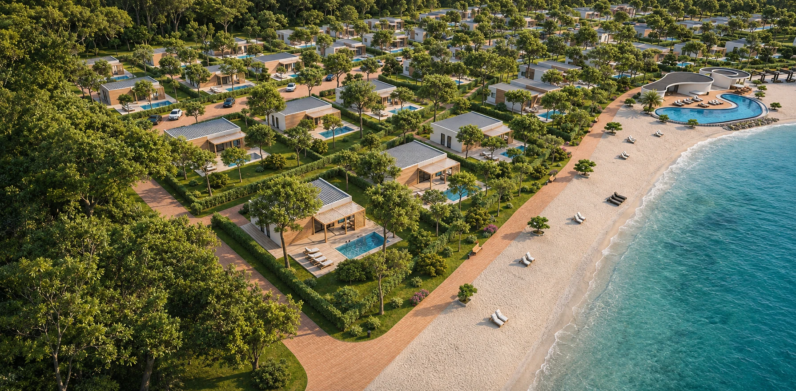
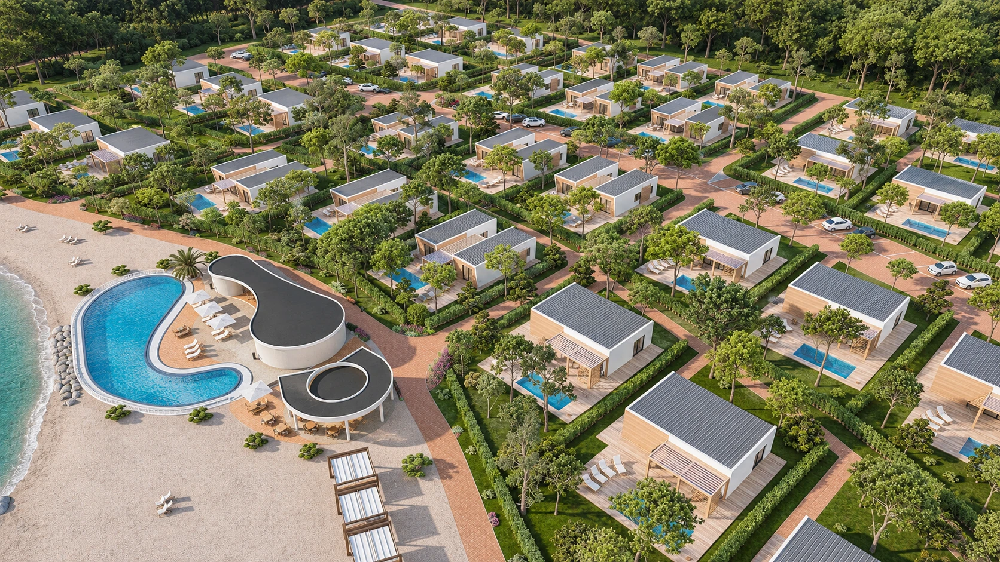
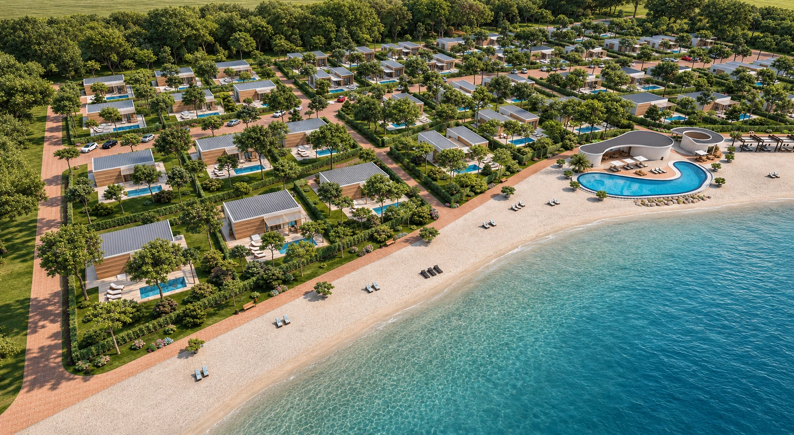
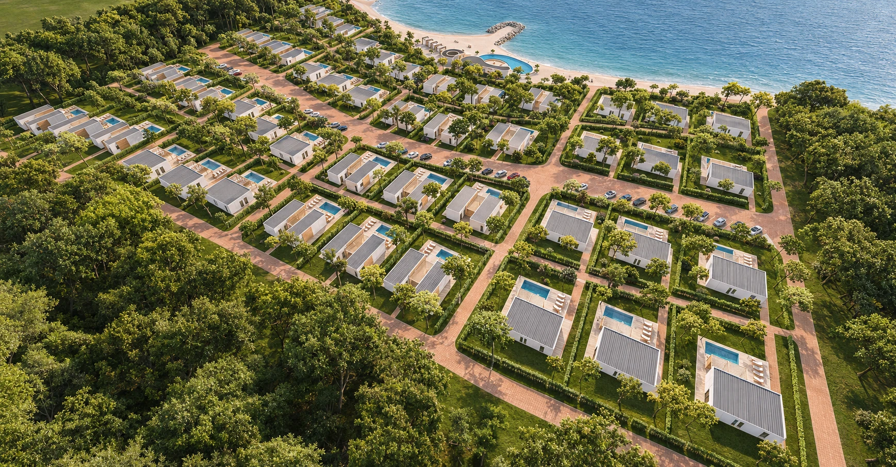
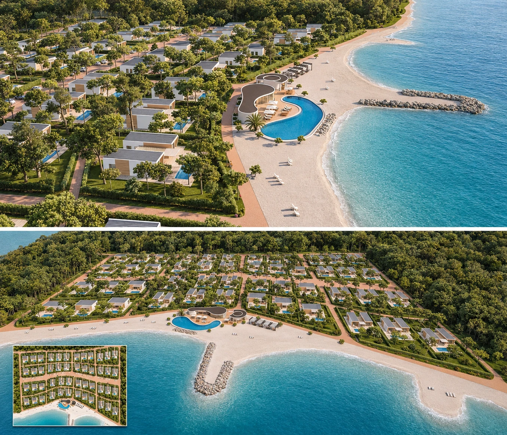
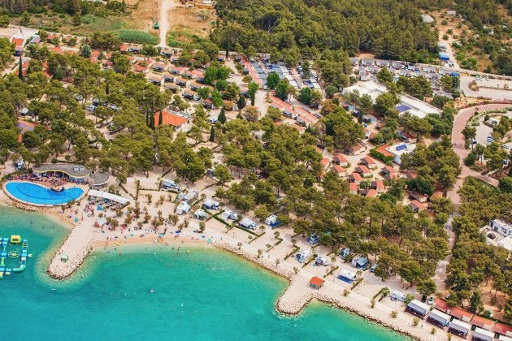
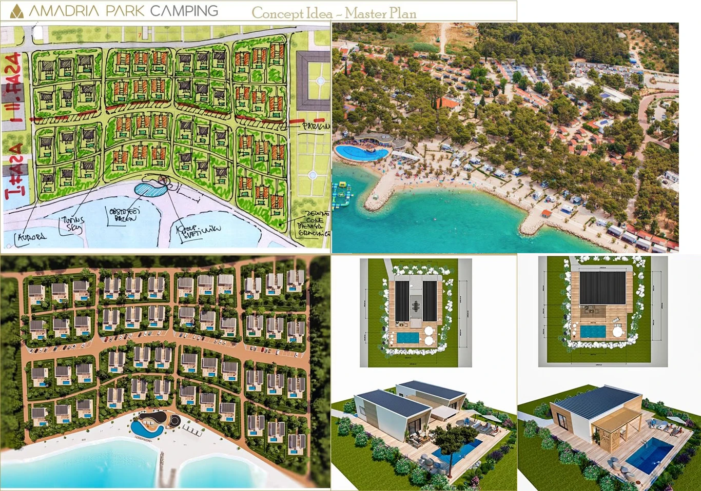

IDEJNA ZASNOVA · MASTERPLAN · ŠIBENIK
Amadria Park Camping
Od obstoječega kampa do jasne prostorske vizije.
Koliko enot, koliko prostora, kakšna izkušnja?
Investitor je želel preveriti, koliko mobilnih hiš izbranega tipa je mogoče umestiti v kamp pri Šibeniku, ob tem pa vsaki enoti zagotoviti dovolj prostora, zasebnosti in urejenih dostopov. Idejna zasnova in 3D-masterplan prikažeta razporeditev nastanitev v dejanskem merilu ter njihov odnos do obale, zelenja in skupnih vsebin.
LokacijaŠibenik, Hrvaška
Vrsta projektaIdejna zasnova in 3D-masterplan
PoudarekRazporeditev mobilnih hiš in vizualizacija







OPRAVLJENE STORITVE
Podlaga za razumevanje in predstavitev investicije.
Continue exploring
Related project studies.
Available for collaboration